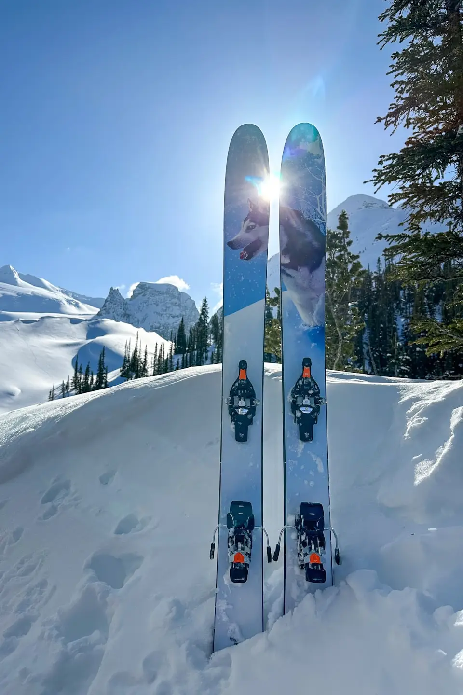
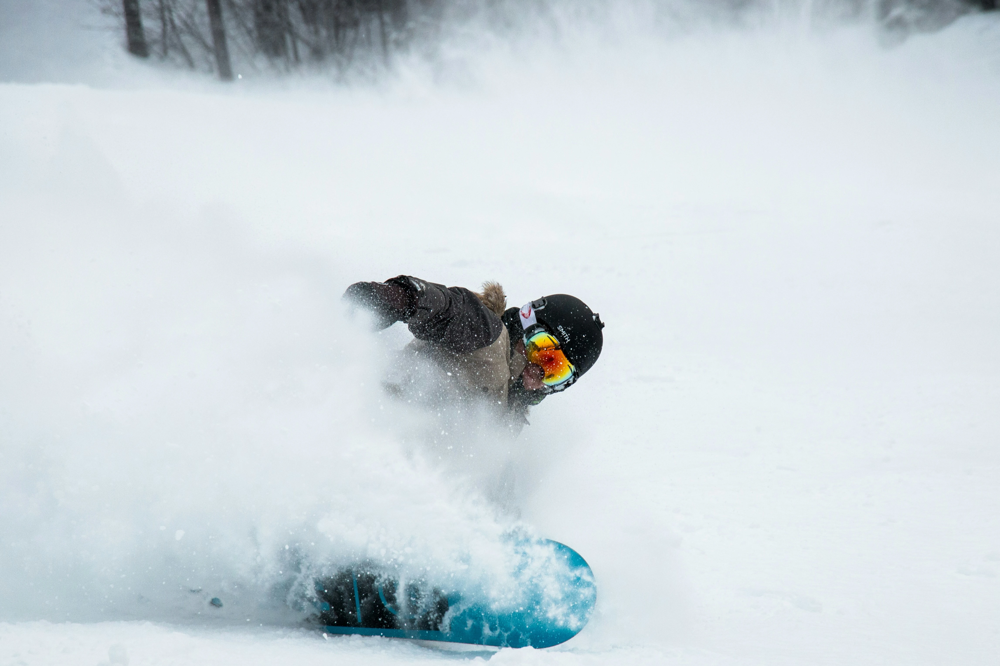
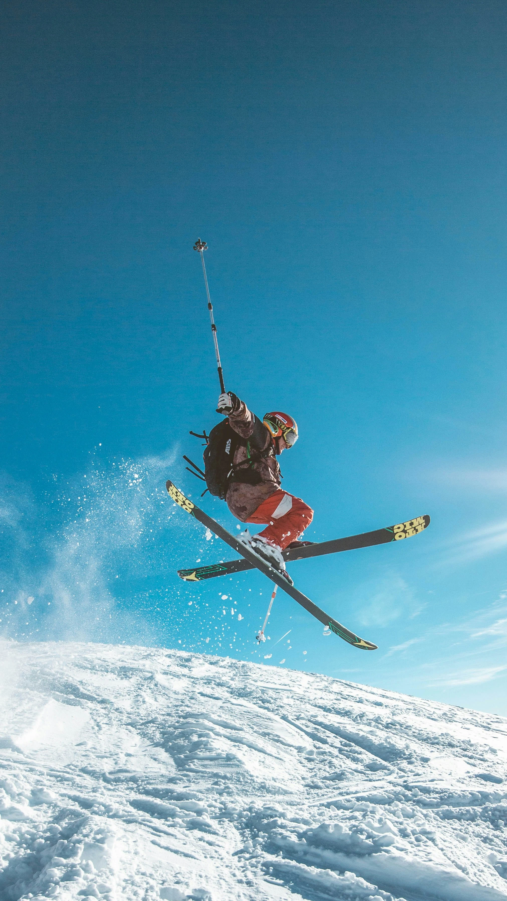

Hochwertige Pflege und präziser Service für maximale Kontrolle, Geschwindigkeit und Fahrspaß auf jeder Piste.
Professionelle Pflege für mehr Sicherheit, bessere Kontrolle und maximale Performance.

Präziser Schliff für optimalen Grip auf harter und eisiger Piste. Perfekt für mehr Kontrolle und Sicherheit beim Fahren.
Professionelles Heißwachs für optimale Gleiteigenschaften und maximale Performance auf jedem Schnee.

Komplettservice speziell für Snowboards inklusive Belagpflege, Kantenschliff und hochwertigem Finish.
Reinigung und Pflege des Belags für längere Haltbarkeit und bessere Laufeigenschaften im Schnee.

Hochwertiges Finish für maximale Geschwindigkeit, perfekte Kontrolle und professionelles Fahrgefühl.
Rundum-Service für Ski und Snowboards — perfekt vorbereitet für die nächste Wintersaison.
Mit professionell gepflegtem Equipment fährst du sicherer, schneller und mit deutlich mehr Kontrolle.
Jetzt Termin vereinbarenProfessionelle Bearbeitung mit Fokus auf maximale Qualität.
Nur hochwertige Wachse und Materialien für beste Ergebnisse.
Service mit Erfahrung und echter Begeisterung für Ski & Snowboard.